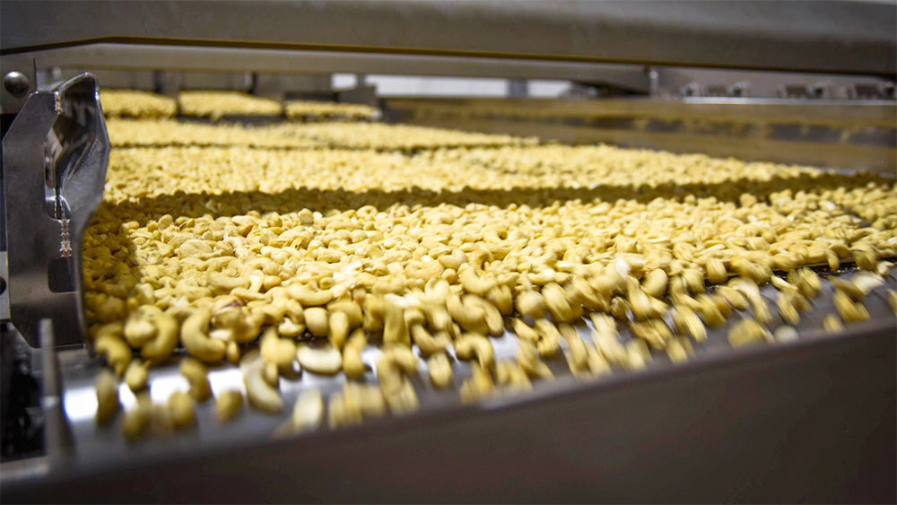
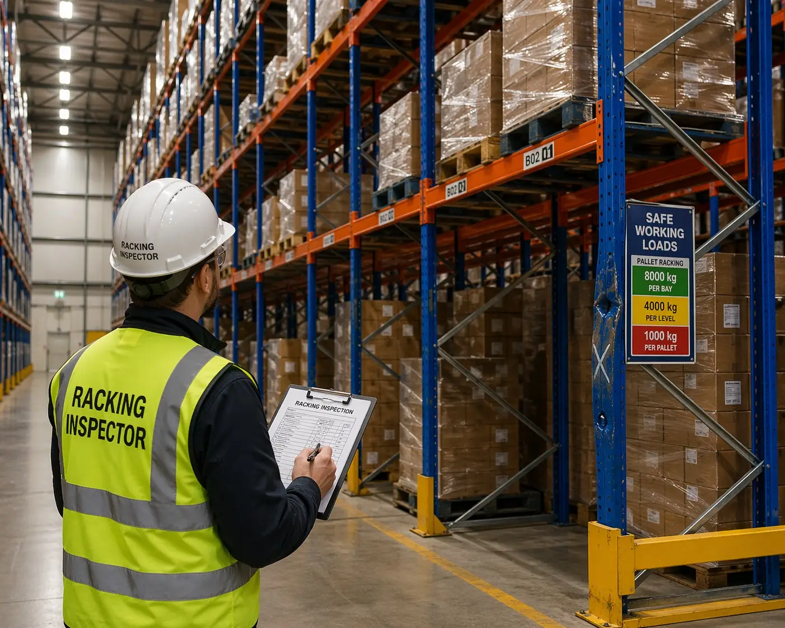

OrigoVia Partners bridges the gap between operational realities in Côte d'Ivoire and strict market requirements, investors, and regulations in the Netherlands and Europe.
Consistent volumes, verified quality, and a single point of contact from purchase order to port of arrival.
Learn more →Committed raw-material supply with traceability data built into every batch, from farm gate to factory.
Learn more →Deal scouting and independent local due diligence for agro-industrial opportunities in Côte d'Ivoire.
Learn more →The required Dutch-Ivorian private sector partner for your RVO or EU grant application.
Learn more →The global cashew value chain is undergoing a fundamental transformation. Côte d'Ivoire is rapidly expanding its local processing capacity, while Dutch and European importers and brand owners face increasingly stringent due diligence regulations (such as CSDDD and CSRD). Without direct, reliable control at origin, businesses face costly quality risks, operational friction, and severe reputational damage.
OrigoVia Partners serves as the strategic and operational bridge. With a permanent presence and deep-rooted expertise in both Côte d'Ivoire and the Netherlands, we connect corporate boardrooms, impact investors, Ivorian processing facilities, and government institutions. We translate European market and regulatory requirements into effective execution on the Ivorian factory floor and in the farming communities.

 The Netherlands — Boardroom
Côte d'Ivoire — Field Audit
The Netherlands — Boardroom
Côte d'Ivoire — Field Audit